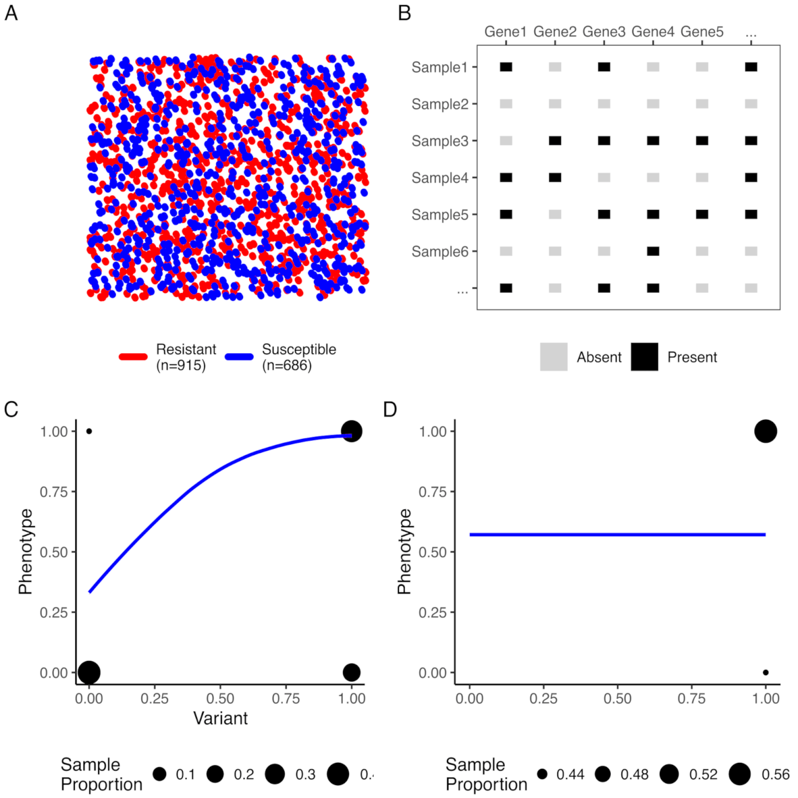
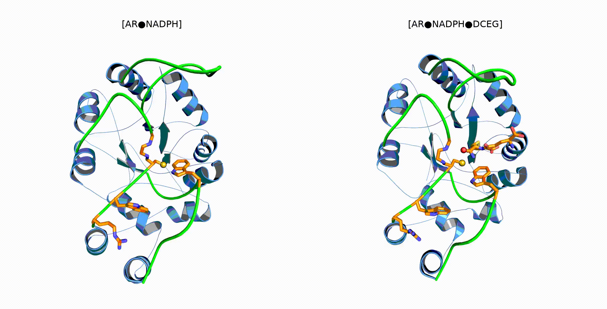
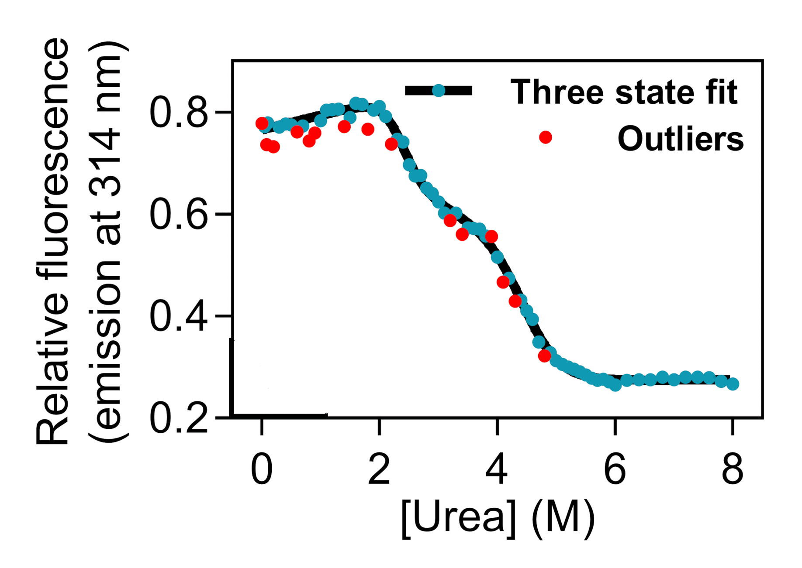
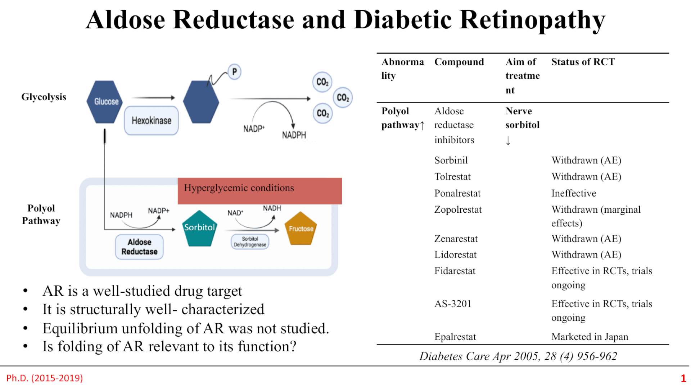

Gurprit Sekhon and Balvinder Singh
BioRxiv · 2025 · PDF

Gurprit Sekhon, Balvinder Singh and Ranvir Singh
JBSD · 2021 · PDF

Gurprit Sekhon and Ranvir Singh
F1000Research · 2019 · PDF

Gurprit Sekhon
